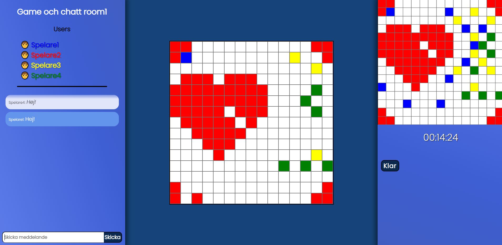

Restaurangen
Skolprojekt med React och TypeScript

Uppgiften var att skapa en fiktiv restaurang. Vi skapade en grafisk profil och en hemsida med möjlighet att boka bord. Förutsättningarna var att det fanns 15 bord med sex sittplatser vid varje och två sittningar varje kväll, kl. 18:00 och 21:00.
Det skulle även finnas med ett admingränssnitt där man ska kunna se, ta bort och redigera bokningar.
Länk till repo
Webshop
Skolprojekt med Angular och TypeScript

Uppgiften var att göra en webshop för filmer som vi fick ta del av genom ett API.
Det skulle vara möjligt att se mer detaljer om en film, lägga en film i varukorg och sedan kunna göra ett köp som sparas.
Det skulle även finnas ett admingränssnitt där man ska kunna se och ta bort beställningar. Testning var också ett krav för högre betyg.
Länk till repo
Ritspel med chatt
Skolprojekt i React och Node

Uppgiften gick ut på att göra ett ritspel där minst fyra personer ska kunna färglägga en bild tillsammans. En randomiserad bild visas som facit och tiden startar när fyra spelare är inloggade i ett rum, det är även först då varje spelare får sin färg. Alla i rummet kan chatta med varandra.
Bilderna sparas och hämtas från MongoDB.
Länk till repo